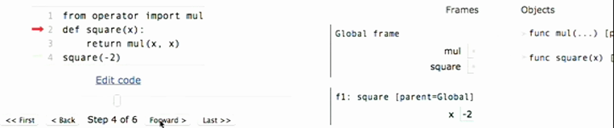

Notes for course UC Berkeley CS61A (2015 spring)
Table of Contents
1 Lecture 1
1.1 What is this course about ?
- A course about managing complexity
- Mastering abstraction
- Programming paradigms
- Not just about 0's and 1's
- An introduction to Python
- Full understanding of language fundamentals
- Learning through implementation
- How computers interpret programming languages
1.2 Alternatives to this course
CS 61AS : Self-Paced CS 61A, using scheme.
CS 10 : The Beauty and Joy of Computing.
1.3 Expression
Evaluation procedure for call expressions:
- Evaluate the operator and then the operand subexpressions
- Apply the function that is the value of the operator subexpression to the arguments that are the values of the operand subexpression
2 Lecture 2
2.1 Names, Assignment, and User-Defined Functions
buildin names are stored in modules
the operator module contains names for the functions that do the same thing as the built-in symbols as the '+' and '-'.
radius = 10 def circ(): return 2 * pi * radius circ() radius = 20 circ()
这个例子是否说明的是函数实现惰性求值。
2.2 Types of Expressions
- Primitive expressions:
- Number or Numeral (2)
- Name (add )
- String ('hello')
- Call expressions: operator(operand, operand, …)
An operand can also be a call expression.
2.3 Environment diagrams
Environment diagrams visualize the interpreter's process
http://www.pythontutor.com/composingprograms.html#mode=display
- Execution rule for assignment statements:
- Evaluate all expressions to the right of = from left to right
- Bind all names to the left of = to those resulting values in the current frame.
2.4 Defining functions
Assignment is a simple means of abstraction: binds names to values
Function definition is a more powerful means of abstraction: binds names to expressions
def <name>(<formal parameters>):
return <return expression>
Everything on the first line after "def" is the function signature.
Function body defines the computation performed when the function is applied.
Execution procedure for def statements:
- Create a function with signature <name>(<formal parameters>)
- Set the body of that function to be everything indented after the first line
- Bind <name> to that function in the current frame
2.5 Calling user defined function
Procedure for calling/applying user-defined functions (version 1):
- Add a local frame, forming a new environment
- Bind the function's formal parameters to its arguments in that frame
- Execute the body of the function in that new environment
Example:

A function's signature has all the information needed to create a local frame